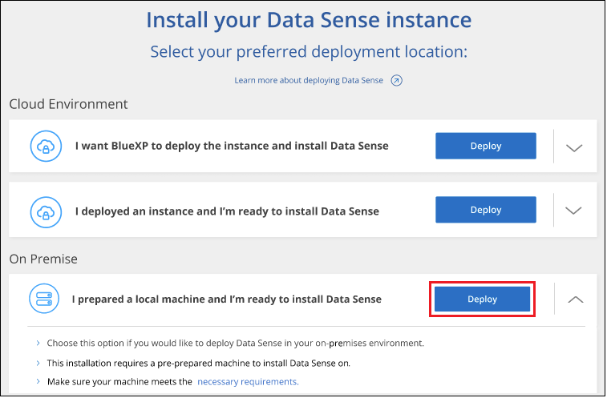

发行说明
发行说明
在无法访问Internet的主机上安装BlueXP分类
 建议更改
建议更改
完成几个步骤、在无法访问Internet的内部站点(也称为"专用模式")中的Linux主机上安装BlueXP分类。此类安装非常适合您的安全站点。
请注意，您也可以 "在可访问Internet的内部站点中部署BlueXP分类"。
BlueXP分类安装脚本首先会检查系统和环境是否满足所需的前提条件。如果满足所有前提条件、则安装将开始。如果要独立于运行BlueXP分类安装来验证前提条件、则可以下载一个单独的软件包、该软件包仅测试前提条件。 "请参见How to check if your Linux host is ready to install BlueXP classification"。
支持的数据源
如果安装的是私有模式(有时称为"脱机"或"非公开"站点)、BlueXP分类只能扫描内部站点本地数据源中的数据。此时、BlueXP分类可以扫描以下*本地*数据源：
-
内部部署 ONTAP 系统
-
数据库架构
-
SharePoint内部部署帐户(SharePoint Server)
-
非 NetApp NFS 或 CIFS 文件共享
-
使用简单存储服务（ S3 ）协议的对象存储
目前不支持扫描Cloud Volumes ONTAP、Azure NetApp Files、FSx for ONTAP、AWS S3或Google Drive、 在私有模式下部署BlueXP分类时的OneDrive或SharePoint Online帐户。
限制
如果BlueXP分类功能部署在无法访问Internet的站点中、则大多数BlueXP分类功能都有效。但是，不支持某些需要访问 Internet 的功能，例如：
-
管理 Microsoft Azure 信息保护（ AIP ）标签
-
在某些关键策略返回结果时向BlueXP用户发送电子邮件警报
-
为不同用户设置BlueXP角色(例如、帐户管理员或合规性查看器)
-
使用BlueXP复制和同步功能复制和同步源文件
-
接收用户反馈
-
从BlueXP自动升级软件
BlueXP Connector和BlueXP分类都需要定期手动升级才能启用新功能。您可以在BlueXP分类UI页面底部看到BlueXP分类版本。检查 "BlueXP分类发行说明" 以查看每个版本中的新功能以及是否需要这些功能。然后，您可以按照以下步骤进行操作 "升级BlueXP Connector" 和 升级BlueXP分类软件。
快速入门
按照以下步骤快速入门，或者向下滚动到其余部分以了解完整详细信息。
 安装BlueXP Connector
安装BlueXP Connector如果尚未在私用模式下安装连接器， "部署连接器" 现在在 Linux 主机上。

 下载并部署BlueXP分类
下载并部署BlueXP分类从NetApp 支持站点 下载BlueXP分类软件、并将安装程序文件复制到要使用的Linux主机。然后启动安装向导并按照提示部署BlueXP分类实例。
 订阅BlueXP分类服务
订阅BlueXP分类服务BlueXP分类在BlueXP中扫描的前1 TB数据可免费使用30天。要在此之后继续扫描数据，需要获得 NetApp 的 BYOL 许可证。
安装BlueXP Connector
如果您尚未在专用模式下安装BlueXP Connector、 "部署连接器" 在脱机站点的 Linux 主机上。
准备 Linux 主机系统
BlueXP分类软件必须在满足特定操作系统要求、RAM要求、软件要求等的主机上运行。
-
与其他应用程序共享的主机不支持BlueXP分类-该主机必须是专用主机。
-
在内部构建主机系统时、您可以根据计划进行BlueXP分类扫描的数据集大小在三种系统大小中进行选择。
系统大小 CPU RAM (必须禁用交换内存) Disk 超大
32个CPU
128 GB RAM
1 TiB SSD开启/、或
-100 GiB可从/opt获得
-在/var/lib/Docker上提供了»
/tmp上的5 GiB大型
16个CPU
64 GB RAM
500 GiB SSD位于/、或上
-100 GiB可从/opt获得
-395 GiB可在/var/lib/Docker上使用
/tmp上的5 GiB中
8个CPU
32 GB RAM
200 GiB SSD开启/、或
-50 GiB可从/opt获得
-145 GiB可在/var/lib/Docker上使用
/tmp上的5 GiB小
8个CPU
16 GB RAM
100 GiB SSD位于/、或上
-50 GiB可从/opt获得
/var/lib/Docker上提供45 GiB
/tmp上的5 GiB请注意、使用较小的系统时存在一些限制。请参见 "使用较小的实例类型" 了解详细信息。
-
在云中为BlueXP分类安装部署计算实例时、我们建议使用满足上述"大型"系统要求的系统：
-
* AWS EC2实例类型*：我们建议使用"m6i.4xlarge"。 "请参见其他AWS实例类型"。
-
* Azure虚拟机大小*：建议使用"Standard_d16s_v3_"。 "请参见其他Azure实例类型"。
-
* GCP计算机类型*：我们建议使用"n2-standard-16"。 "请参见其他GCP实例类型"。
-
-
UNIX文件夹权限：需要以下最低UNIX权限：
文件夹 最小权限 /tmp
rwxrwxrwt/opt
rwxr-xr-x/var/lib/Docker
rwx------/usr/lib/systemd/system
rwxr-xr-x -
* 操作系统 * ：
-
以下操作系统要求使用Docker容器引擎：
-
Red Hat Enterprise Linux 7.8和7.9版
-
CentOS 7.8和7.9版
-
Ubuntu 22.04 (需要BlueXP分类版本1.23或更高版本)
-
-
以下操作系统要求使用Podman容器引擎、并且需要BlueXP分类版本1.26或更高版本：
-
Red Hat Enterprise Linux 9.0、9.1和9.2版
请注意、使用RHEL 9.x时、当前不支持以下功能：
-
在非公开站点安装
-
分布式扫描；使用主扫描程序节点和远程扫描程序节点
-
-
-
-
* Red Hat订阅管理*：主机必须向Red Hat订阅管理注册。如果未注册、系统将无法在安装期间访问存储库来更新所需的第三方软件。
-
其他软件：在安装BlueXP分类之前、必须在主机上安装以下软件：
-
NTP注意事项：NetApp建议将BlueXP分类系统配置为使用网络时间协议(NTP)服务。BlueXP分类系统和BlueXP Connector系统之间的时间必须同步。
-
* Firewalld注意事项*：如果您计划使用
firewalld，我们建议您在安装BlueXP分类之前启用它。运行以下命令进行配置firewalld以便与BlueXP分类兼容：firewall-cmd --permanent --add-service=http firewall-cmd --permanent --add-service=https firewall-cmd --permanent --add-port=80/tcp firewall-cmd --permanent --add-port=8080/tcp firewall-cmd --permanent --add-port=443/tcp firewall-cmd --reload
请注意、每当启用或更新时、都必须重新启动Docker或Podman
firewalld设置。

|
安装后无法更改BlueXP分类主机系统的IP地址。 |
验证BlueXP和BlueXP分类前提条件
在部署BlueXP分类之前、请查看以下前提条件、以确保您的配置受支持。
-
确保Connector有权为BlueXP分类实例部署资源和创建安全组。您可以在中找到最新的BlueXP权限 "NetApp 提供的策略"。
-
确保您可以保持BlueXP分类运行。BlueXP分类实例需要持续扫描数据。
-
确保Web浏览器连接到BlueXP分类。启用BlueXP分类后、确保用户从连接到BlueXP分类实例的主机访问BlueXP界面。
BlueXP分类实例使用专用IP地址来确保索引数据不可供其他人访问。因此、用于访问BlueXP的Web浏览器必须连接到该专用IP地址。此连接可以来自与BlueXP分类实例位于同一网络中的主机。
验证是否已启用所有必需的端口
您必须确保所有必需的端口均已打开、可供Connector、BlueXP分类、Active Directory和数据源之间进行通信。
| 连接类型 | 端口 | Description |
|---|---|---|
连接器<> BlueXP分类 |
8080 (TCP)、6000 (TCP)、443 (TCP)和80 |
连接器的安全组必须允许通过端口6000和443传入和传出BlueXP分类实例的流量。
|
Connector <> ONTAP 集群(NAS) |
443 (TCP) |
BlueXP使用HTTPS发现ONTAP 集群。如果使用自定义防火墙策略，则它们必须满足以下要求：
|
BlueXP分类<> ONTAP 集群 |
|
BlueXP分类需要与每个Cloud Volumes ONTAP 子网或内置ONTAP 系统建立网络连接。Cloud Volumes ONTAP 的安全组必须允许从BlueXP分类实例进行入站连接。 确保这些端口对BlueXP分类实例开放：
NFS卷导出策略必须允许从BlueXP分类实例进行访问。 |
BlueXP分类<> Active Directory |
389 (TCP和UDP)、636 (TCP)、3268 (TCP)和3369 (TCP) |
您必须已为公司中的用户设置 Active Directory 。此外、BlueXP分类需要Active Directory凭据才能扫描CIFS卷。 您必须具有 Active Directory 的信息：
|
如果您使用多个BlueXP分类主机来提供额外的处理能力来扫描数据源、则需要启用其他端口/协议。 "请参见其他端口要求"。
在内部Linux主机上安装BlueXP分类
对于典型配置，您将在一个主机系统上安装该软件。 "请在此处查看这些步骤"。

对于需要扫描数 PB 数据的大型配置，您可以使用多个主机来提供额外的处理能力。 "请在此处查看这些步骤"。

典型配置的单主机安装
在脱机环境中的单个内部主机上安装BlueXP分类软件时、请按照以下步骤进行操作。
请注意、安装BlueXP分类时会记录所有安装活动。如果在安装期间遇到任何问题、您可以查看安装审核日志的内容。它将写入到 /opt/netapp/install_logs/。 "请单击此处查看更多详细信息"。
-
在已配置Internet的系统上、从下载BlueXP分类软件 "NetApp 支持站点"。您应选择的文件名为 * Datasis-offline-bundle-<version>.tar.gz* 。
-
将安装程序捆绑包复制到计划在专用模式下使用的Linux主机。
-
解压缩主机上的安装程序包，例如：
tar -xzf DataSense-offline-bundle-v1.25.0.tar.gz此操作将提取所需的软件和实际安装文件* cc_onprem_installer.tar.gz*。
-
解压缩主机上的安装文件，例如：
tar -xzf cc_onprem_installer.tar.gz -
启动BlueXP并选择*监管>分类*。
-
单击 * 激活数据感知 * 。

-
单击*部署*以启动内部安装。

-
此时将显示_Deploy Data sense on premises_对话框。复制提供的命令(例如：
sudo ./install.sh -a 12345 -c 27AG75 -t 2198qq --darksite)并将其粘贴到文本文件中、以便稍后使用。然后单击*关闭*以关闭此对话框。 -
在主机上、输入复制的命令、然后按照一系列提示进行操作、或者您也可以提供完整命令、其中包含所有必需的参数作为命令行参数。
请注意、安装程序会执行预检、以确保满足您的系统和网络要求、以便成功安装。
根据提示输入参数： 输入完整命令： -
粘贴您从第8步复制的信息：
sudo ./install.sh -a <account_id> -c <client_id> -t <user_token> --darksite -
输入BlueXP分类主机的IP地址或主机名、以便连接器系统可以访问它。
-
输入BlueXP Connector主机的IP地址或主机名、以便BlueXP分类系统可以访问它。
或者、您也可以提前创建整个命令、并提供必要的主机参数：
sudo ./install.sh -a <account_id> -c <client_id> -t <user_token> --host <ds_host> --manager-host <cm_host> --no-proxy --darksite变量值：
-
account_id = NetApp 帐户 ID
-
_client_id =连接器客户端ID (如果客户端ID尚未添加后缀"clients"、请将其添加到该客户端ID)
-
user_token= JWT用户访问令牌
-
ds_host= BlueXP分类系统的IP地址或主机名。
-
cm_host= BlueXP Connector系统的IP地址或主机名。
-
BlueXP分类安装程序会安装软件包、注册安装并安装BlueXP分类。安装可能需要 10 到 20 分钟。
如果主机和连接器实例之间通过端口8080建立了连接、您将在BlueXP的BlueXP分类选项卡中看到安装进度。
在配置页面中，您可以选择本地 "内部 ONTAP 集群" 和 "数据库" 要扫描的。
您也可以 "为BlueXP分类设置BYOL许可" 此时从BlueXP电子钱包页面。在30天免费试用结束之前、不会向您收取任何费用。
适用于大型配置的多主机安装
对于需要扫描数 PB 数据的大型配置，您可以使用多个主机来提供额外的处理能力。使用多个主机系统时，主系统称为 Manager node ，提供额外处理能力的其他系统称为 扫描 程序 nodes 。
在脱机环境中的多个内部主机上安装BlueXP分类软件时、请按照以下步骤进行操作。
-
验证管理器和扫描程序节点的所有 Linux 系统是否都符合 主机要求。
-
确认已安装两个必备软件包(Docker Engine或Podman以及Python 3)。
-
确保您在 Linux 系统上具有 root 权限。
-
验证脱机环境是否满足要求 权限和连接。
-
您必须具有计划使用的扫描程序节点主机的 IP 地址。
-
必须在所有主机上启用以下端口和协议：
Port 协议 Description 2377
TCP
集群管理通信
7946
TCP ， UDP
节点间通信
4789
UDP
覆盖网络流量
50
电子服务
加密的 IPsec 覆盖网络（ ESP ）流量
111.
TCP ， UDP
用于在主机之间共享文件的 NFS 服务器（需要从每个扫描程序节点到管理器节点）
2049.
TCP ， UDP
用于在主机之间共享文件的 NFS 服务器（需要从每个扫描程序节点到管理器节点）
-
按照中的步骤 1 至 8 进行操作 "单主机安装" 在管理器节点上。
-
如步骤 9 所示，在安装程序提示时，您可以在一系列提示中输入所需值，也可以将所需参数作为命令行参数提供给安装程序。
除了可用于单主机安装的变量之外，还会使用一个新选项 * -n <node_IP>* 来指定扫描程序节点的 IP 地址。多个节点 IP 以逗号分隔。
例如、此命令将添加3个扫描程序节点：
sudo ./install.sh -a <account_id> -c <client_id> -t <user_token> --host <ds_host> --manager-host <cm_host> -n <node_ip1>,<node_ip2>,<node_ip3> --no-proxy --darksite -
在管理器节点安装完成之前，将显示一个对话框，其中显示了扫描程序节点所需的安装命令。复制命令(例如：
sudo ./node_install.sh -m 10.11.12.13 -t ABCDEF-1-3u69m1-1s35212)并将其保存在文本文件中。 -
在 * 每个 * 扫描程序节点主机上：
-
将Data sense安装程序文件(* cc_onprem_installer.tar.gz*)复制到主机。
-
解压缩安装程序文件。
-
粘贴并运行在步骤 3 中复制的命令。
在所有扫描程序节点上完成安装且这些节点已加入管理器节点后，管理器节点安装也会完成。
-
BlueXP分类安装程序完成软件包安装并注册安装。安装可能需要 15 到 25 分钟。
在配置页面中，您可以选择本地 "内部 ONTAP 集群" 和本地 "数据库" 要扫描的。
您也可以 "为BlueXP分类设置BYOL许可" 此时从BlueXP电子钱包页面。在30天免费试用结束之前、不会向您收取任何费用。
升级BlueXP分类软件
由于BlueXP分类软件定期更新新功能、因此您应进入例行程序定期检查新版本、以确保您使用的是最新的软件和功能。您需要手动升级BlueXP分类软件、因为没有Internet连接、无法自动执行升级。
-
我们建议您将BlueXP Connector软件升级到最新可用版本。 "请参见 Connector 升级步骤"。
-
从BlueXP分类版本1.24开始、您可以升级到任何未来的软件版本。
如果BlueXP分类软件运行的版本早于1.24、则一次只能升级一个主要版本。例如、如果您安装了1.21.x版、则只能升级到1.22.x如果您有几个主要版本，则需要多次升级此软件。
-
在已配置Internet的系统上、从下载BlueXP分类软件 "NetApp 支持站点"。您应选择的文件名为 * Datasis-offline-bundle-<version>.tar.gz* 。
-
将软件包复制到非公开站点上安装了BlueXP分类的Linux主机。
-
解压缩主机上的软件包，例如：
tar -xvf DataSense-offline-bundle-v1.25.0.tar.gz此操作将提取安装文件* cc_onprem_installer.tar.gz*。
-
解压缩主机上的安装文件，例如：
tar -xzf cc_onprem_installer.tar.gz此操作将提取升级脚本 * 启动 _didssite_upgrade.sh* 以及任何所需的第三方软件。
-
在主机上运行升级脚本，例如：
start_darksite_upgrade.sh
在主机上升级BlueXP分类软件。更新可能需要 5 到 10 分钟。
请注意、如果您已在多个主机系统上部署BlueXP分类来扫描非常大的配置、则不需要对扫描程序节点进行升级。
您可以通过检查BlueXP分类UI页面底部的版本来验证软件是否已更新。